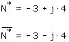
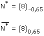
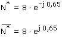

Conjugado
Forma binómica: Se cambia el signo de la componente compleja

Forma módulo-argumental El módulo es el mismo y el argumento es el opuesto

Forma exponencial Se cambia el signo del exponente

El producto de un complejo por su conjugado es el cuadrado del módulo del complejo